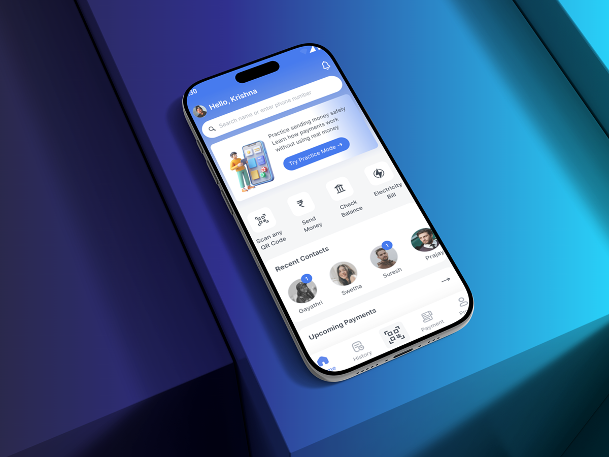

Fintech · UX Research + Product Design
PayNora
A payments app built for senior and cautious users - the people most likely to fear a wrong tap. Guided flows, voice-assisted confirmation, and a risk-free practice mode let them build real confidence before real money moves.
- Addressed fraud anxiety and fear of mistakes head-on
- Simplified navigation for low digital-confidence users
- Practice-based learning before live transactions